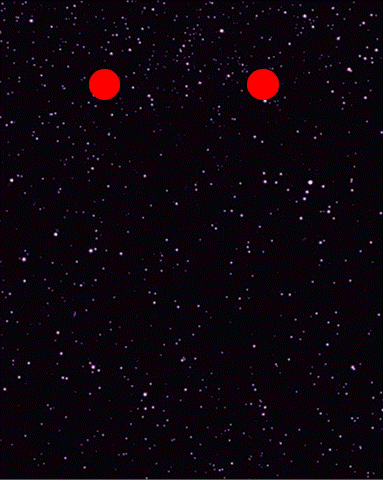
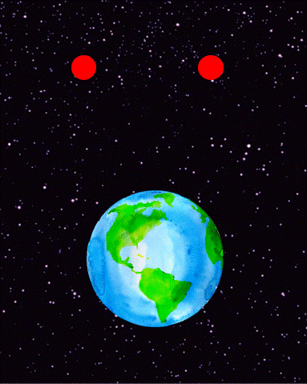

Forças de Maré
O princípio da equivalência, apesar de ser um bom guia para entendermos diversos fenômenos gravitacionais, tem uma limitação:

O princípio da equivalência, apesar de ser um bom guia para entendermos diversos fenômenos gravitacionais, tem uma limitação:
Imagine que você é um astronauta gigante no espaço caindo em direção à Terra. Embora, como vimos anteriormente, você não sinta seu próprio peso ao cair, na verdade, você ainda sentirá alguns pequenos efeitos residuais da gravidade, que são chamados de forças de maré e podem ser entendidos pensando nas forças gravitacionais que você sente, primeiro do ponto de vista de alguém que o observa da Terra e depois do seu próprio ponto de vista.
|
Visto da Terra, a atração gravitacional é ligeiramente diferente em várias partes do seu corpo: Como seus pés estão mais próximos da Terra do que a sua cabeça, a gravidade os puxa com mais força do que puxa sua cabeça. E como a gravidade puxa sempre em direção ao centro da Terra, ela tem uma componente que aperta seus lados para dentro. |
|
Do seu ponto de vista, você se sente sem peso. No entanto, a parte que desapareceu da gravidade é apenas a parte que o puxa para baixo. O alongamento da cabeça aos pés e o aperto lateral permanecem. Eles são causados pelas diferenças entre a gravidade nas extremidades do seu corpo e a gravidade no centro dele. |
Essas forças residuais, segundo o Princípio da Equivalência, não deveriam existir. Então, temos que limitar o Princípio da Equivalência a somente referenciais muito pequenos. Uma formiga, por exemplo, por ter suas extremidades tão próximas ao seu centro, não sentiria o efeito das forças de maré!
Embora o Princípio da Equivalência valha em um espaço suficientemente pequeno, não vale para referenciais grandes. E essas forças de maré sentidas em grandes estruturas são na verdade a chave para entendermos a gravidade como manifestação da curvatura do espaço-tempo!
Forças de maré têm esse nome porque as marés nos oceanos são causadas por um efeito desse tipo, devido à atração gravitacional da Lua e do Sol sobre a Terra. Considere por exemplo o sistema Terra-Lua:

A diferença de intensidade e direção da força gravitacional da Lua sobre diversas partes dos oceanos provoca o efeito discutido acima de alongamento na direção Terra-Lua, e achatamento na direção ortogonal. Ao longo do dia, a Terra gira e a altura dos oceanos se ajusta, resultando no efeito de duas marés altas e duas marés baixas por dia. O mesmo efeito acontece para o sistema Terra-Sol, de modo que as marés na Terra são uma combinação dessas duas influências.
Uma forma de entermos o que é a curvatura é analisando como se comportam as linhas retas num certo espaço:
No plano, se duas retas são inicialmente paralelas, elas continuam paralelas quando estendidas. Isso faz do plano um espaço com curvatura nula.
No caso da esfera, por outro lado, as coisas são diferentes! O primeiro ponto, no caso, é entender o que seria o análogo de uma linha reta na esfera. Os matemáticos chamam de geodésicas a curva sobre um espaço qualquer que é a "mais reta possível" dada a geometria daquele espaço. No caso da esfera, geodésicas são arcos de grandes círculos (círculos centrados no centro da esfera). Essas curvas fornecem o caminho mais curto entre dois pontos, sendo, inclusive, o caminho preferido para as rotas dos aviões.
Considere agora duas geodésicas inicialmente paralelas, como os dois meredianos mostrados na figura. Eles são pararelos nos pontos A e B, mas ao caminharmos ao longo dos meredianos em direção ao polo, vemos que a distância entre eles diminui e eles evetualmente convergem no ponto C. Essa é a característica de um espaço curvo.
Em um universo sem gravidade, as partículas livres da ação de forças seguem movimentos absolutamente retilíneos e uniformes - geodésicas no espaço-tempo. O espaço-tempo da Relatividade Restrita é plano, no sentido de que duas partículas inicialmente em repouso (que seguem geodésicas inicialmente paralelas), continuam em repouso. Suas trajetórias no espaço-tempo seguem paralelas.
Por outro lado, em um universo com gravidade, duas partículas inicialmente em repouso e sujeitas apenas à ação da gravidade não permanecem em repouso por conta justamente das forças de maré!
Quando Einstein entendeu isso, percebeu que as forças de maré são na verdade uma manifestação da curvatura do espaço-tempo!